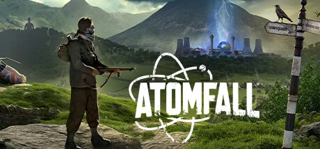

英国核灾后背景的生存动作 FPS，融合探索、制造与射击玩法。


想象一片1960 年代的英国坎布里亚乡村——本来该有的所有东西都还在：石墙农舍、泥泞小径、绿色牧场、雨。但1957 年温德斯凯尔核事故这次没有像现实里那样被压下来——它在游戏的时间线里炸出了一片完整的隔离区。整片乡村被军方铁丝网围起来，里面散落着茶壶、报纸、双层巴士残骸，草丛里能听见某种叫不出名字的东西在动。这不是美式末世——这是「绅士末日」，连辐射后的废墟里你都还想找一杯没凉透的茶。
你在某座地堡里醒来——你不记得自己是谁。手里只有一根板球棍、一份发黄的电报、一段不知道是谁的女王广播片段。你不是特工、不是兵、不是任何重要的人——你只是在错的时间出现在错的地方的失忆英国平民。可你刚走出地堡就发现有人在追你：军方的防化部队在用扩音器喊你的（不是你的？）名字、平民幸存者把你拽进谷仓让你别出声、变异生物从泥地里慢慢爬出来。
替你递过烟的那个农夫，下一秒可能是举枪的军方线人；你刚刚拼出的那块核灾真相碎片，会让某个一直在帮你的「朋友」突然不再回你的电报；那杯你想着进了下一座屋子就泡的茶，可能这辈子都泡不上了。这不是一个关于英雄拯救世界的故事，是一个关于「在最英国的方式里，世界完蛋了」的故事——铁丝网那头的雾又起了，你今晚打算往哪个方向走？
绅士末日 × 1960s 英国核灾，是把1950-60 年代英国乡村视觉（石墙农舍、花呢西装、双层巴士、茶具）和核灾辐射变异恐怖塞进同一片乡村里的混血美学。底色是熟悉的英国乡村田园——绿色牧场、阴雨天、石墙、农舍；变异在于把英国文化最熟悉的物件放在不该出现的地方（茶壶散在尸体旁、报纸贴在变异生物的窝里）。色彩锁定灰绿 + 泥棕 + 辐射黄三色组合。整体调性介于《谁是凶手》类英式悬疑和《迷雾》《诸神黄昏》类生态恐怖之间。
英式核灾末世美学的脉络可以追溯到1957 年真实的温德斯凯尔（Windscale）核事故——这是英国历史上最严重的核灾难，但被政府部分掩盖。1960-70 年代 BBC 大量拍摄《诸神黄昏 Threads》（1984）这类核战末日剧集，定型了「英国乡村核灾美学」的视觉语汇。1979 年 阿兰·摩尔的漫画《V 字仇杀队》把英式反乌托邦推到流行文化高峰。1990-2000 年代英国 B 级恐怖片（《惊变 28 天》）和《黑镜》把英式末世做成可识别的子类型。Rebellion 工作室自己用《狙击精英》系列建立了二战军事写实美术能力，2025 年用 Atomfall 把这套能力转向英国本土的核灾架空——用 Game Pass 首日策略把 AA 级精品推到大众视野，并用「英式冷幽默 + 黑色末世」的差异化定位避开了美式 3A 末世的红海。
基于体验清单 · 审美偏好 · IP故事三维度综合选出
点击链接跳转到对应平台查看 · 仅整理外部链接